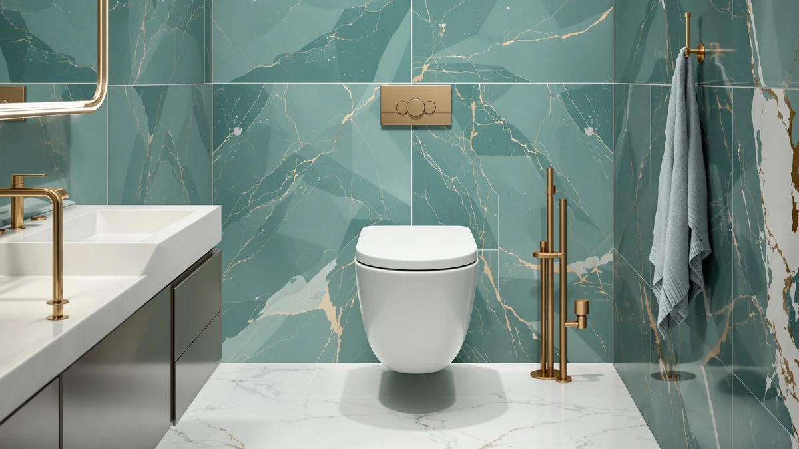

Los Flexi Round Bowl Wall Mount Toilet Review (2026): Worth It?


Quick Answer
Our Los Flexi Round Bowl Wall Mount Toilet review found a concealed-tank, wall-hung design that frees up floor space and runs a rimless swirl flush on 0.8/1.6 GPF dual flush settings, for $419.99. It fits bathrooms being remodeled down to the studs, not a quick swap onto an existing floor-mount toilet.
Our pick: Round Bowl Wall Mount Toilet, $419.99 Check Price on Amazon
Bottom line: our top pick is the Round Bowl Wall Mount Toilet Combo Set - Los Flexi Compact at $419.99.
Things to Know Before You Buy
- It needs an open wall, not a floor swap. The Los Flexi Round Bowl Wall Mount Toilet ships as a combo set because the tank and carrier mount inside the stud wall, so it's built for new construction or a gut remodel rather than replacing an existing toilet in an afternoon.
- The carrier adjusts before the wall closes. Los Flexi lists an adjustable mounting height of 0 to 7 7/8 inches on the carrier, which lets an installer set the bowl height to standard comfort level or slightly lower before the drywall goes up.
- The flush is rimless and dual-mode. A 0.8/1.6 GPF dual flush paired with a rimless swirl design is meant to clear the bowl without the hidden rim lip where residue typically collects on older toilets.
- At $419.99, it costs more than its one-piece alternatives. The Loniko smart bidet toilet runs $399.99, and both the Los Flexi 19 Inch High Toilet and the American Standard Compact Cadet 3 sit near $398, all without a wall carrier to buy or install.
- Los Flexi hasn't published a customer rating for this listing. Neither this toilet nor the three alternatives compared here show a star rating or review count yet, so buyers should weigh installer feedback from plumbing forums alongside the spec sheet.
This Los Flexi Round Bowl Wall Mount Toilet review exists because wall-hung toilets keep showing up in small-bathroom renovation plans, and buyers want to know whether the space they save is worth the extra installation complexity. You can't unbolt an old toilet and drop this one in its place without opening the wall first. The tank and carrier go inside the wall, which means the decision gets made at the framing stage, long before anyone picks tile.
We compared the Los Flexi's listed specs, current Amazon pricing and design against three toilets a shopper in this price range would likely also be looking at: a tankless smart bidet toilet from Loniko, a retro-styled extra-tall one-piece from Los Flexi's own lineup, and American Standard's Compact Cadet 3. The short version: the Round Bowl Wall Mount Toilet earns its $419.99 price with floor space and a cleaner look, but it only makes sense if your bathroom plan already includes opening the wall.
Why You Should Trust Us
Ilane Tall covers bathroom fixtures for Best One Piece Toilets and built this Los Flexi Round Bowl Wall Mount Toilet review from the manufacturer's listed specs, the product's Amazon price history and the features Los Flexi and its competitors publish for each model. We don't own a test bathroom and we don't install the toilets we cover. Instead, we read the spec sheets closely, compare them against similarly priced alternatives, and flag anywhere the listing leaves a gap, like the missing customer rating on this model.
That research-first approach means we're upfront when the data runs out. We'll tell you what the manufacturer claims, how that stacks up against the competition, and where you'd need to check installer reviews or a plumber's opinion before committing.
How We Compared
We built this review by comparing the Los Flexi Round Bowl Wall Mount Toilet's published specs against its current Amazon listing price and against three other toilets in the same $397 to $420 range. Our process starts with the manufacturer's own feature list: flush type, GPF rating, included hardware and installation requirements. From there, we check what Los Flexi includes versus what competitors like Loniko and American Standard charge for, and we note where a listing is missing information buyers typically expect, such as a star rating or review count.
We did not install this toilet, mount it to a wall, or run any flush through it ourselves. Owners who buy a wall-hung model like this one typically report the installation process to plumbing and renovation forums rather than Amazon reviews, since the work usually involves a contractor rather than a DIY swap, and we point to that gap in the FAQ below.
Overview & Specs

Round Bowl Wall Mount Toilet
What we like
- Wall-hung design clears the floor for easier cleaning and a more open-feeling bathroom.
- Rimless swirl flush removes the hidden rim lip where grime typically builds up.
- Carrier height adjusts 0 to 7 7/8 inches, giving installers flexibility before the wall closes.
- Dual flush (0.8/1.6 GPF) gives you a water-saving option for liquid waste.
Flaws but not dealbreakers
- Requires an open wall and a carrier system, so it's not a same-day toilet replacement.
- Costs about $20 more than one-piece alternatives in this review that need no wall work at all.
- Los Flexi hasn't published a star rating or review count for this listing.
| Material | — |
| Size | — |
The Round Bowl Wall Mount Toilet sells as a combo set, which tells you most of what you need to know about the installation. Los Flexi includes the concealed tank and carrier system in the box because a wall-hung bowl can't work with the bare bowl alone. The carrier bolts to the floor and wall studs, the tank sits inside the finished wall, and a push plate on the wall is all that's visible once drywall and tile go up. Los Flexi lists an adjustable mounting height of 0 to 7 7/8 inches on the carrier, so an installer sets the final bowl height to standard comfort level, or a bit lower for a child's bathroom, before the wall is closed up.
On the flush side, Los Flexi pairs a rimless bowl with a 0.8/1.6 GPF dual flush and what it calls a swirl or tornado flush pattern. Rimless design means there's no overhanging lip around the bowl's interior for waste or mineral deposits to collect, which Los Flexi claims gets the bowl 99% clean on every flush. We can't verify that figure independently since Los Flexi doesn't publish a customer rating or review count for this listing, but the dual-flush option (a lighter 0.8 GPF mode and a fuller 1.6 GPF mode) matches what you'd expect from a toilet in this price range, and it gives you a water-saving choice for routine use that fixed single-flush models like the American Standard Compact Cadet 3 in this comparison don't offer.
What We Liked
The biggest draw in this Los Flexi Round Bowl Wall Mount Toilet review is the floor clearance. A wall-hung bowl leaves nothing between the toilet and the floor, which makes mopping and sweeping faster and gives a small bathroom a less cramped look. That's the main reason designers reach for wall-mount fixtures in tight powder rooms and primary bathroom remodels alike.
The rimless swirl flush is the other standout feature. Removing the hidden rim that traditional bowls use to direct water also removes the spot where grime and hard-water deposits build up fastest. Paired with the 0.8/1.6 GPF dual flush, you get a lower water bill on routine flushes without giving up a stronger flush when you need one. The adjustable 0 to 7 7/8 inch carrier height is also a genuine advantage over fixed-height one-piece toilets, since it lets a contractor fine-tune the bowl position for the household using it.
What Could Be Better
The honest drawback in any Los Flexi Round Bowl Wall Mount Toilet review is the installation barrier. Because the tank and carrier live inside the wall, you can't replace an existing floor-mount toilet with this one without opening up drywall and likely rerouting the water line. That rules it out for anyone who wants to swap a worn toilet over a weekend.
Price is a secondary concern. At $419.99, the Los Flexi costs about $20 more than the one-piece American Standard Compact Cadet 3 or the Los Flexi 19 Inch High Toilet, neither of which requires wall work. And since Los Flexi hasn't published a star rating or review count for this specific listing, buyers have less verified owner feedback to lean on than they would with a more established model.
Who Is It For?
This Los Flexi Round Bowl Wall Mount Toilet review points toward one clear buyer: someone already planning a full bathroom remodel, where the wall is coming down anyway and a contractor can install the carrier and concealed tank as part of the job. It's a strong fit for small bathrooms and powder rooms where every inch of floor space matters, and for anyone who wants the cleaner, more modern look of a floating bowl.
Skip it if you're replacing a toilet without touching the wall. You'll spend more money and effort than a floor-mount swap requires, and you won't recoup that cost in daily use. For that situation, a one-piece toilet like the American Standard Compact Cadet 3 or the Los Flexi 19 Inch High Toilet gets you a comparable flush without any wall work.
Alternatives to Consider
If the wall-mount installation doesn't fit your project, these three toilets land in the same $397 to $400 price range and install like a standard floor-mount fixture.

Also Great
Smart Toilet with Bidet Built
A tankless electric bidet toilet with foot-sensor flush and a 1000-gram MaP rating, for buyers who want smart features over wall-mount styling.
$399.99
Check Price on Amazon
Also Great
19 Inch High Toilet Los
A retro-styled, extra-tall one-piece toilet with a skirted base and soft-close seat, for a standard floor-mount install with an easier sit-to-stand height.
$399.99
Check Price on Amazon
Best Value
American Standard 612AA001.020 Compact Cadet
A budget-friendly one-piece toilet from an established brand, with a slow-close seat and elongated bowl at the lowest price in this comparison.
$397.76
Check Price on AmazonFrequently Asked Questions
Does the Los Flexi Round Bowl Wall Mount Toilet need a special wall for installation?
Yes. Wall-mount toilets like this one need an in-wall carrier and concealed tank system set into the stud wall before the finished wall goes up, which is why the Los Flexi ships as a combo set rather than a standalone bowl. That makes it a better fit for new construction or a full bathroom remodel than a simple toilet swap.
What does the adjustable 0 to 7 7/8 inch height on the Los Flexi carrier actually do?
The carrier lets an installer set the bowl's mounting height within that range before the wall is finished, so the toilet can be positioned for standard comfort height or lowered slightly for a child or a smaller bathroom. Once the wall is closed up, that height is fixed.
Is the Los Flexi Round Bowl Wall Mount Toilet worth the price compared with a one-piece toilet?
At $419.99, it costs about the same as the Loniko smart bidet toilet and roughly $20 more than the American Standard Compact Cadet 3 and the Los Flexi 19 Inch High Toilet, both one-piece models that need no wall carrier. The premium buys floor space and a cleaner look, not necessarily better flushing performance.
Final Verdict
This Los Flexi Round Bowl Wall Mount Toilet review comes down to one question: is your wall already open? If you're mid-remodel or building new, the $419.99 Los Flexi delivers a rimless, dual-flush, space-saving fixture with a carrier that adjusts to your layout, and it's a smart pick for small bathrooms where floor space is tight. If your wall is closed and you want a working toilet without opening it up, put that money toward the American Standard Compact Cadet 3 or the Los Flexi 19 Inch High Toilet instead.